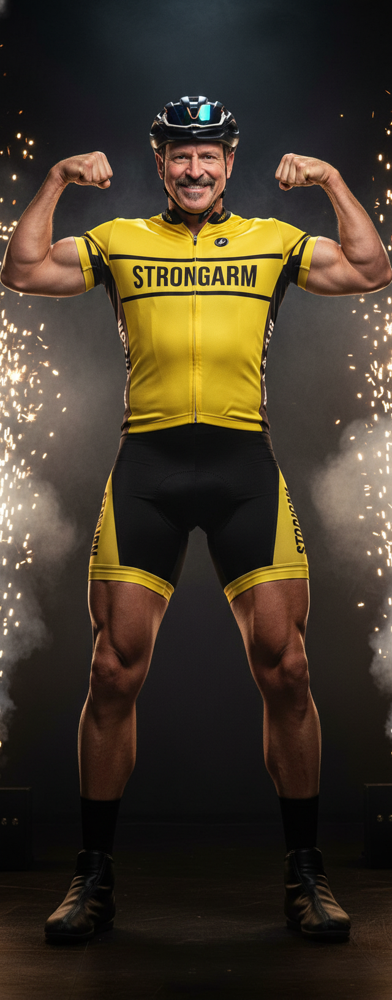

Not every legend makes the starting roster. Some are still in the lab — all engine, no roster, working their way up from the cul-de-sac to the big leagues.
★ Prospect #1 ★
FTP 388 WRON. The most aerobically gifted man in this entire family, and he will not let you forget it. They call him Lance "Strongarm" — the Yellow Jersey Juggernaut — because somewhere out there an NBA player dunked a basketball and Ron decided that was nothing compared to a Strava KOM. He clips into the bottom rope, lectures the crowd about watts per kilogram, and genuinely believes a road cyclist is a superior athlete to any player in the NBA.
His legs? World-historic. Carved from marble by an Italian. His arms? The official program lists Ron's biceps as "present." When Ron hits a double-bicep pose, the jumbotron operator is contractually required to zoom out. His sworn rival — a certain retired cyclist with shockingly large biceps and a fondness for press conferences — shall remain unnamed for legal reasons, but Ron dedicates every match to proving that guy's arms were the only honest thing about him.
Everything you need to torment Ron at the next family gathering. Drag, press, and roast. He gets every Lance reference — that's the point.
Sample collected at 6:04 AM after a "casual" 4-hour ride.